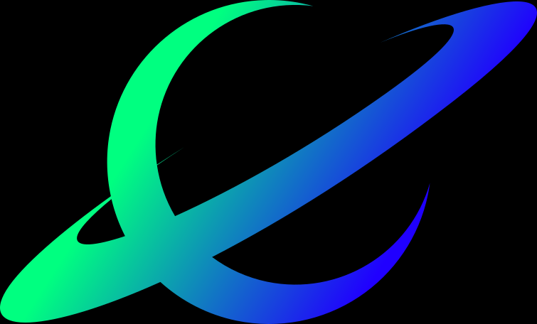
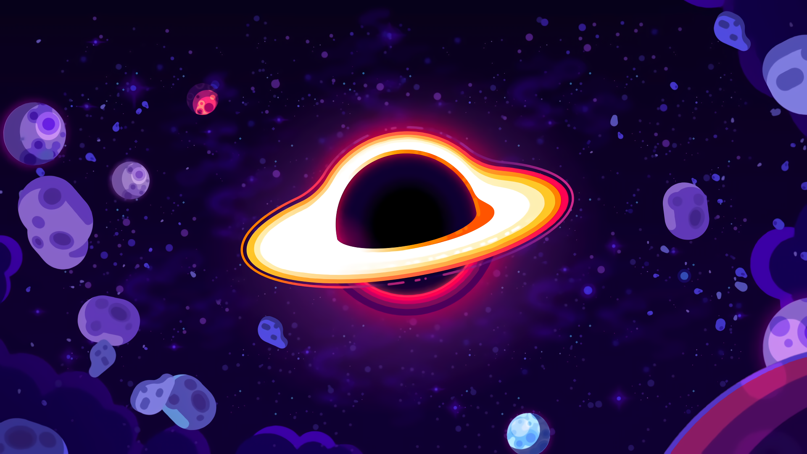

← Back to Portfolio

Last Design
Different color scheme
First sketches
First sketches
Last design with border

First sketches

Inspiration
barkolorious Logo
Logo for myself. I wanted a blackhole logo which was inspired of Kurzgesagt's blackhole. However, there are endless blackhole logos in the internet. So I wanted mein to stand out. So I tried several design but when I was poking around with Inkscape's perspective tool, I accidentaly made the last design. And it looked just right.
I tried some other color schemes but blue gradient was the best. I tried to add a border, I used it liked that for some time but I changed it.